4. iDMRG¶
By : Hsu Ke, Kai-Hsin Wu
In the previous example we demostrated how the finite size DMRG is implemented, Here we present the infinite system size DMRG (iDMRG) scheme which consider the system with infinite boundary condition[PVM12], where the bondaries (enviroments) are grows the lattice by one or more sites each iteration, at the fixed point, a translationally invariant wavefunction is produced.
In another algorithm of infinite size simulation, iTEBD, a properly converged state requires careful scaling of the time-step to zero, a DMRG approach where an efficient local eigensolver is used to find a variationally optimal state ought to be much more robust and efficient. There are also disadavatages for iDMRG, we recommend the interested reader to refer to the paper of iDMRG or benchmarks made in the relevant papers.
Here, we use a 1D transverse field Ising model (TFIM) as a simple example to show how to implement iDMRG algorithm in Cytnx and get the infinite system size (variational) ground state.

where  are the pauli matrices.
The infinite size ground state can be represent by MPS as variational ansatz, refer to the previous examples.
are the pauli matrices.
The infinite size ground state can be represent by MPS as variational ansatz, refer to the previous examples.
The MPO is constucted as following:
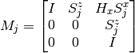
with the left and right boundary:
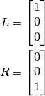
4.1. Initialization¶
The initailzation of MPO is much the same as we did in the previous DMRG example:
In python
1 2 3 4 5 6 7 8 9 10 11 12 13 14 15 16 17 18 19 | J = 1.0
Hx = 1.0
d = 2
sx = cytnx.physics.pauli('x').real()
sz = cytnx.physics.pauli('z').real()
eye = cytnx.eye(d)
M = cytnx.zeros([3, 3, d, d])
M[0,0] = M[2,2] = eye
M[0,1] = M[1,2] = sz
M[0,2] = Hx*sx
M = cytnx.UniTensor(M,0)
L0 = cytnx.UniTensor(cytnx.zeros([3,1,1]),0) #Left boundary
R0 = cytnx.UniTensor(cytnx.zeros([3,1,1]),0) #Right boundary
L0.get_block_()[0,0,0] = 1.; R0.get_block_()[2,0,0] = 1.
L = L0
R = R0
|
4.2. Update procedure¶
The first step of iDMRG is to obtain a initial two-site state, which is done by solving the eigenvalue problem of two-site hamitonian:
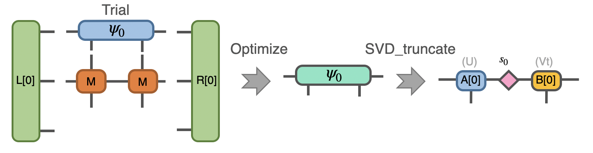{kind=link}
Let’s implement the function solving eigenvalue problem using in-built Lanczos method and the needed linear operation class:
In python
1 2 3 4 5 6 7 8 9 10 11 12 13 14 15 16 17 18 19 20 21 22 23 24 25 26 27 28 29 30 31 | class Projector(cytnx.LinOp):
def __init__(self,L,M1,M2,R,psi_dim,psi_dtype,psi_device):
cytnx.LinOp.__init__(self,"mv",psi_dim,psi_dtype,psi_device)
self.anet = cytnx.Network("projector.net")
self.anet.PutUniTensor("M2",M2)
self.anet.PutUniTensors(["L","M1","R"],[L,M1,R],False)
self.psi_shape = [L.shape()[1],M1.shape()[2],M2.shape()[2],R.shape()[1]]
def matvec(self,psi):
psi_p = cytnx.UniTensor(psi.clone(),0) ## clone here
psi_p.reshape_(*self.psi_shape)
self.anet.PutUniTensor("psi",psi_p,False) ## no- redundant clone here
H_psi = self.anet.Launch(optimal=True).get_block_() # get_block_ without copy
H_psi.flatten_()
return H_psi
def eig_Lanczos(psivec, functArgs, Cvgcrit=1.0e-15,maxit=100000):
""" Lanczos method for finding smallest algebraic eigenvector of linear \
operator defined as a function"""
#print(eig_Lanczos)
Hop = Projector(*functArgs,psivec.shape()[0],psivec.dtype(),psivec.device())
gs_energy ,psivec = cytnx.linalg.Lanczos_Gnd(Hop,Cvgcrit,Tin=psivec,maxiter=maxit)
return psivec, gs_energy.item()
|
Now do the optimization and SVD task:
In python
1 2 3 4 5 6 7 8 9 | psi = cytnx.UniTensor(cytnx.random.normal([1,d,d,1],1,2),2)
shp = psi.shape()
psi_T = psi.get_block_(); psi_T.flatten_() ## flatten to 1d
psi_T, Entemp = eig_Lanczos(psi_T, (L,M,M,R), maxit=maxit);
psi_T.reshape_(*shp)
psi = cytnx.UniTensor(psi_T,2)
s0,A,B = cytnx.linalg.Svd_truncate(psi,min(chi,d)) ## Svd
s0/=s0.get_block_().Norm().item() ## normalize
|
Note
we are using a unit cell of two sites, however the unit cell can be any size, including a single site.
we performed SVD and use the left and right basis to update the environment for effective hamitonian, these procedure and network will always be the same in the future interations
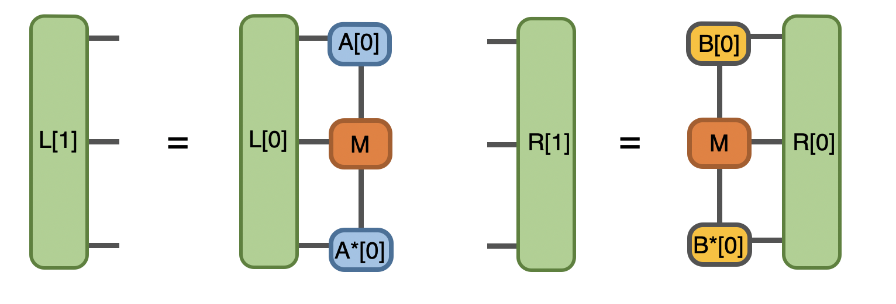{kind=link}
In python
1 2 3 4 5 6 | anet = cytnx.Network("L_AMAH.net")
anet.PutUniTensors(["L","A","A_Conj","M"],[L,A,A.Conj(),M],is_clone=False);
L = anet.Launch(optimal=True)
anet = cytnx.Network("R_AMAH.net")
anet.PutUniTensors(["R","B","B_Conj","M"],[R,B,B.Conj(),M],is_clone=False);
R = anet.Launch(optimal=True)
|
we then solve the eigenvalue problem again and do SVD for the new effective hamitonian, note that we initialized a new random trial state here.
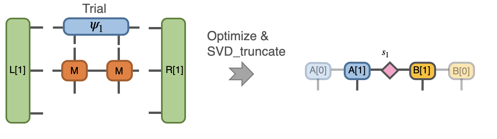{kind=link}
In python
1 2 3 4 5 6 7 8 9 | ## Construct n = 1
psi = cytnx.UniTensor(cytnx.random.normal([d,d,d,d],0,2),2)
shp = psi.shape()
psi_T = psi.get_block_(); psi_T.flatten_() ## flatten to 1d
psi_T, Entemp = eig_Lanczos(psi_T, (L,M,M,R), maxit=maxit);
psi_T.reshape_(*shp)
psi = cytnx.UniTensor(psi_T,2)
s1,A,B = cytnx.linalg.Svd_truncate(psi,min(chi,d*d))
s1/=s1.get_block_().Norm().item()
|
followed by another environment update:
In python
1 2 3 4 5 6 7 | # absorb A[1], B[1] to left & right enviroment.
anet = cytnx.Network("L_AMAH.net")
anet.PutUniTensors(["L","A","A_Conj","M"],[L,A,A.Conj(),M],is_clone=False);
L = anet.Launch(optimal=True)
anet = cytnx.Network("R_AMAH.net")
anet.PutUniTensors(["R","B","B_Conj","M"],[R,B,B.Conj(),M],is_clone=False);
R = anet.Launch(optimal=True)
|
The next few steps involve “rotate” the center of our state to the left and right:
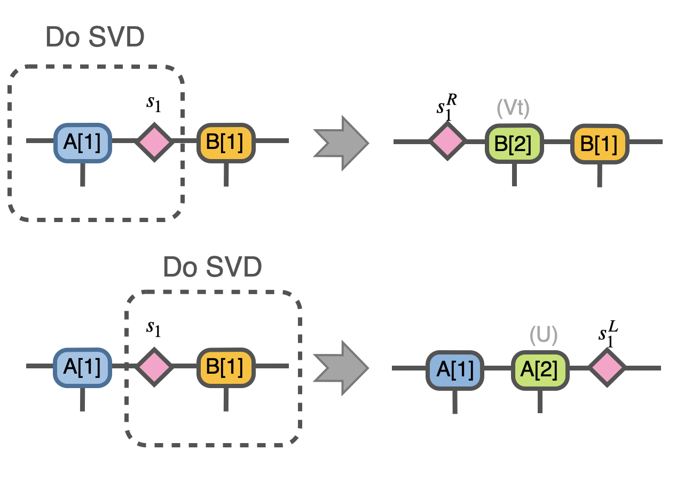{kind=link}
which is done by the straightforward contraction and re-SVD:
In python
1 2 3 4 5 6 7 8 9 10 11 12 13 14 15 16 17 18 19 20 | ## rotate left
A.set_rowrank(1)
sR,_,A = cytnx.linalg.Svd(cytnx.Contract(A,s1))
## rotate right
B.set_rowrank(2)
sL,B,_ = cytnx.linalg.Svd(cytnx.Contract(s1,B))
## now, we change it just to be consistent with the notation in the paper
#
# before:
# env-- B'--sL sR--A' --env
# | |
#
# after change name:
#
# env-- A--sL sR--B --env
# | |
#
A,B = B,A
|
Note that we have discarded U for the rotate left case and Vt for the right, and now in this scheme we construct our trial state for the n=2 iteration as follows, which looks like a inserted two new sites between our environment:
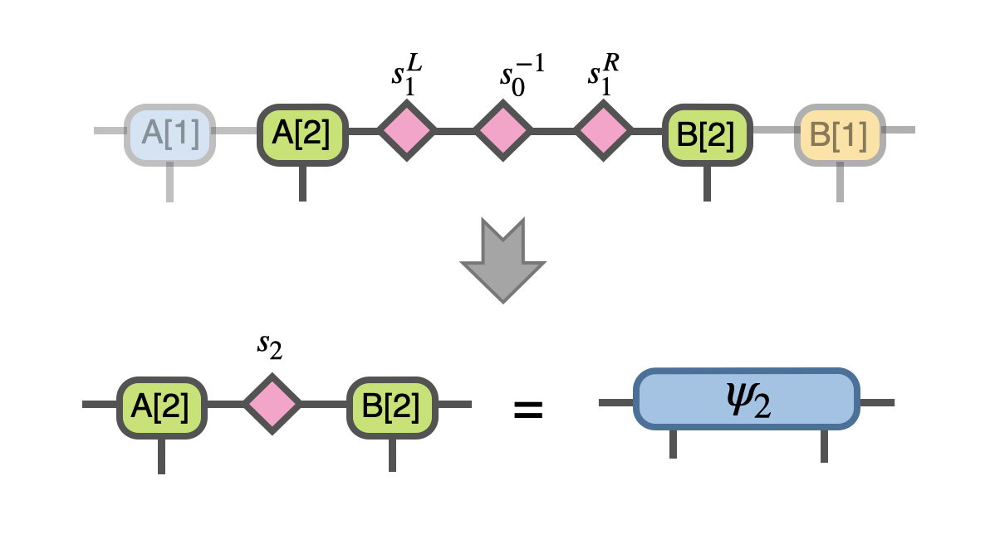{kind=link}
and optimize this state:
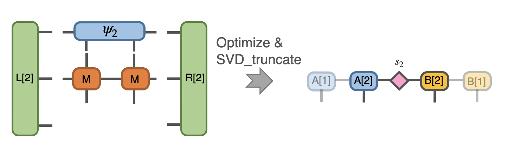{kind=link}
But where does that trial form come from? To gain more insight about it, we can instead consider the iTEBD approach here, which is done by perform an evolution “gate” on the two sites:
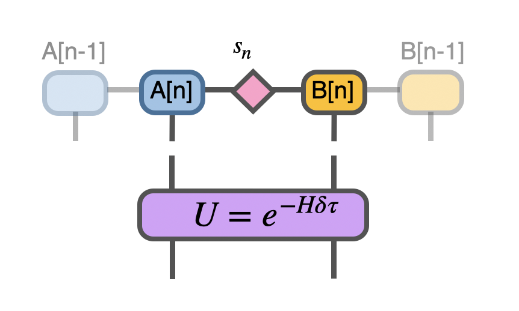{kind=link}
Suppose we didn’t even know what 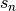 looks like here, it’s just a , then we can simply follows the procedures mentioned in the iTEBD example, we have the following Vidal’s form for unit cell of two sites at n-th step:
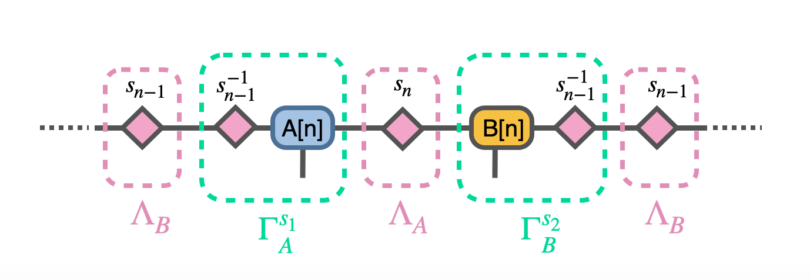{kind=link}
this immediately suggests the above trial form if we try to rotate the center to the left and right and use translation symmetry.
The construction of trial state and optimization is done as follows:
In python
1 2 3 4 5 6 7 8 9 10 11 12 13 14 15 16 17 18 19 20 21 | sR.set_label(0,1)
sL.set_label(1,0)
s0 = 1./s0
s0.set_labels([0,1])
s2 = cytnx.Contract(cytnx.Contract(sL,s0),sR)
s2.set_labels([-10,-11])
A.set_label(2,-10)
B.set_label(0,-11)
psi = cytnx.Contract(cytnx.Contract(A,s2),B)
## optimize wave function:
# again use Lanczos to get the (local) ground state.
shp = psi.shape()
psi_T = psi.get_block_(); psi_T.flatten_() ## flatten to 1d
psi_T, Entemp = eig_Lanczos(psi_T, (L,M,M,R), maxit=maxit);
psi_T.reshape_(*shp)
psi = cytnx.UniTensor(psi_T,2)
s2,A,B = cytnx.linalg.Svd_truncate(psi,min(chi,psi.shape()[0]*psi.shape()[1]))
s2/=s2.get_block_().Norm().item()
|
then we check the convergence by comparing the singular values to the one we obtained in the previous iteration:
In python
1 2 3 4 5 6 7 8 9 | if(s2.get_block_().shape()[0] != s1.get_block_().shape()[0]):
ss = 0
print("step:%d, increasing bond dim!! dim: %d/%d"%(i,s1.get_block_().shape()[0],chi))
else:
ss = abs(cytnx.linalg.Dot(s2.get_block_(),s1.get_block_()).item())
print("step:%d, diff:%11.11f"%(i,1-ss))
if(1-ss<1.0e-10):
print("[converge!!]")
break;
|
also rememeber to update the environment using the SVD result.
In python
1 2 3 4 5 6 7 8 9 10 | anet = cytnx.Network("L_AMAH.net")
anet.PutUniTensors(["L","A","A_Conj","M"],[L,A,A.Conj(),M],is_clone=False);
L = anet.Launch(optimal=True)
anet = cytnx.Network("R_AMAH.net")
anet.PutUniTensors(["R","B","B_Conj","M"],[R,B,B.Conj(),M],is_clone=False);
R = anet.Launch(optimal=True)
s0 = s1
s1 = s2
|
After reaching the fixed point, let’s consider a local measurement of energy for the final state:
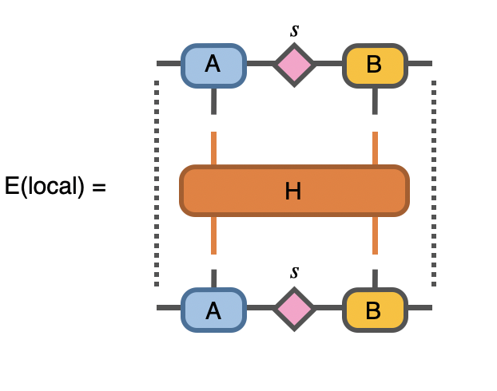{kind=link}
In python
1 2 3 4 5 6 7 8 | H = J*cytnx.linalg.Kron(sz,sz) + Hx*(cytnx.linalg.Kron(sx,eye) + cytnx.linalg.Kron(eye,sx))
H = cytnx.UniTensor(H.reshape(2,2,2,2),2)
# use the converged state to get the local energy:
anet = cytnx.Network("Measure.net")
anet.PutUniTensors(["psi","psi_conj","M"],[psi,psi,H])
E = anet.Launch(optimal=True).item()
print("ground state E",E)
|
- PVM12
Ho N. Phien, Guifré Vidal, and Ian P. McCulloch. Infinite boundary conditions for matrix product state calculations. Phys. Rev. B, 86:245107, Dec 2012. URL: https://link.aps.org/doi/10.1103/PhysRevB.86.245107, doi:10.1103/PhysRevB.86.245107.